Slavonska01
ketchup, suhi vrat, sir, gljive, luk, feferoni, slanina
Ljuta
Izbor naših pizza sa sastojcima. Na jelovniku ih je četrdesetak, uz lasagne. Za pizzu koje ovdje nema ili vlastitu kombinaciju samo nas nazovite.
ketchup, suhi vrat, sir, gljive, luk, feferoni, slanina
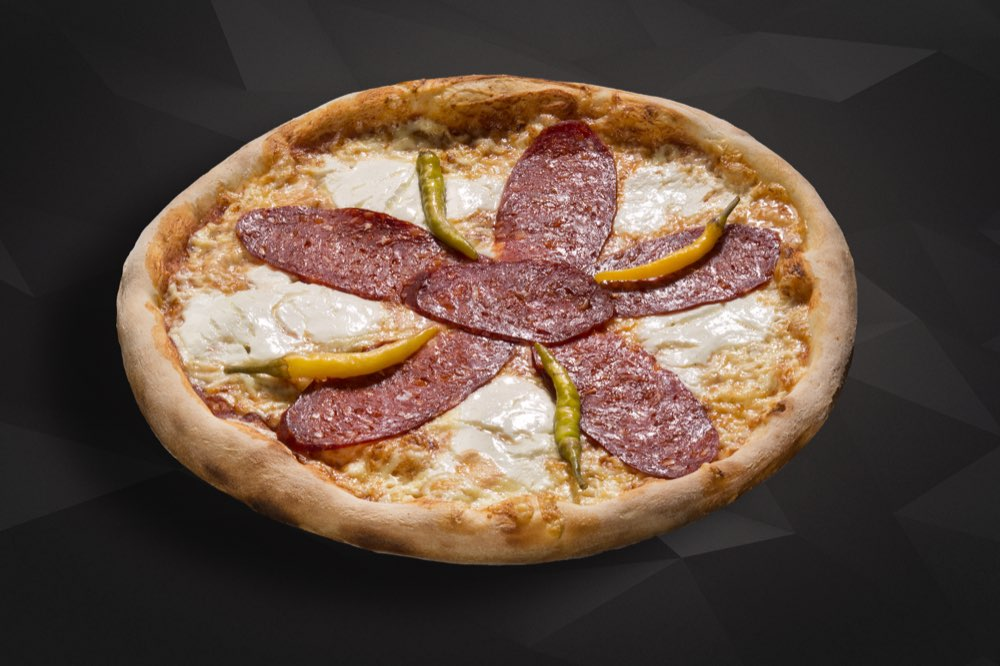
ketchup, sir, ljuti feferoni, kulen, kiselo vrhnje

ketchup, sir, pršut, kulen, ljuti feferoni, svježa rajčica, svježi sir

ketchup, sir, kulen, slanina, ljuti feferoni
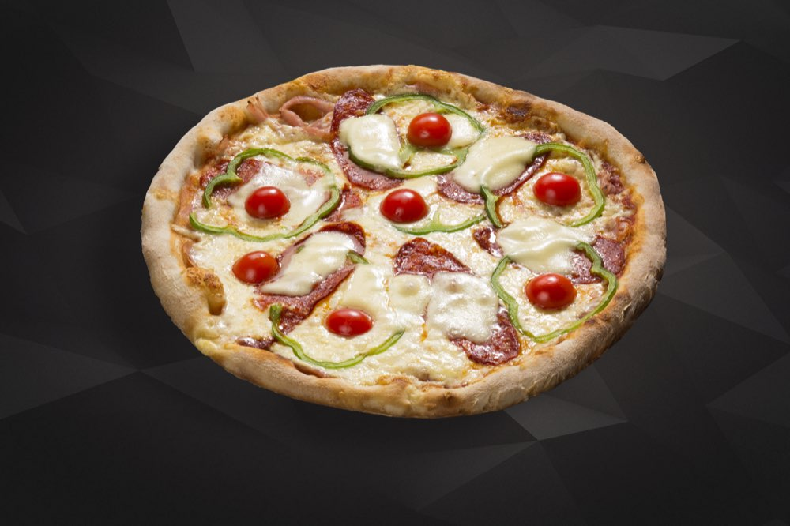
ketchup, šunka, sir, svježa paprika, kulen, mozzarella, cherry rajčica

ketchup, sir, svježa paprika, svježa rajčica, mozzarella, pršut, masline
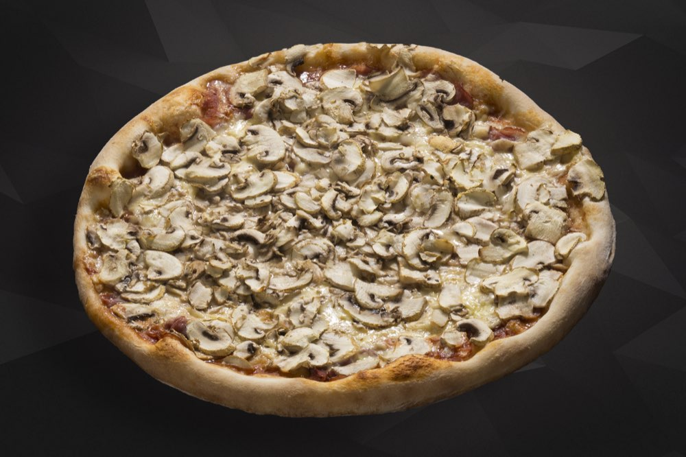
ketchup, suhi vrat, sir, gljive
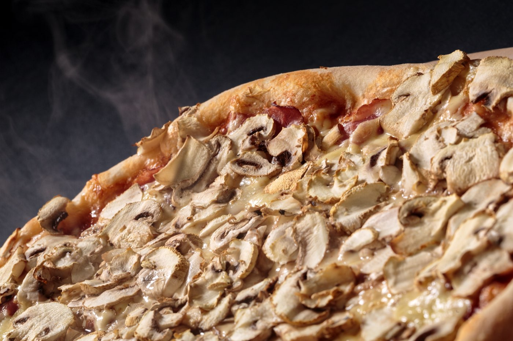
ketchup, šunka, sir, gljive
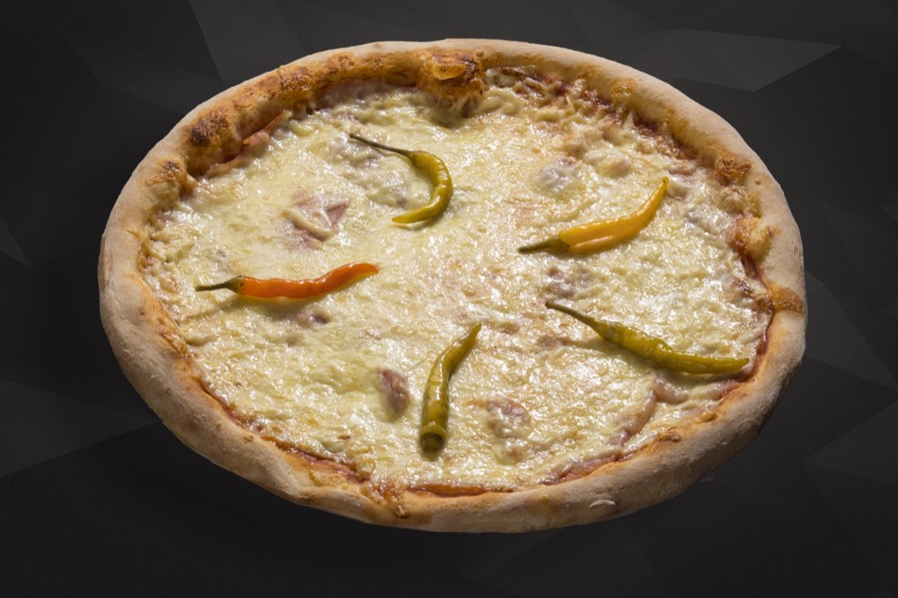
ketchup, šunka, sir, ljuti feferoni
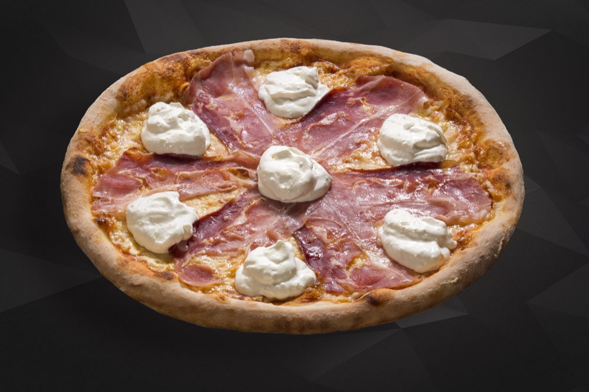
ketchup, sir, pršut, kiselo vrhnje
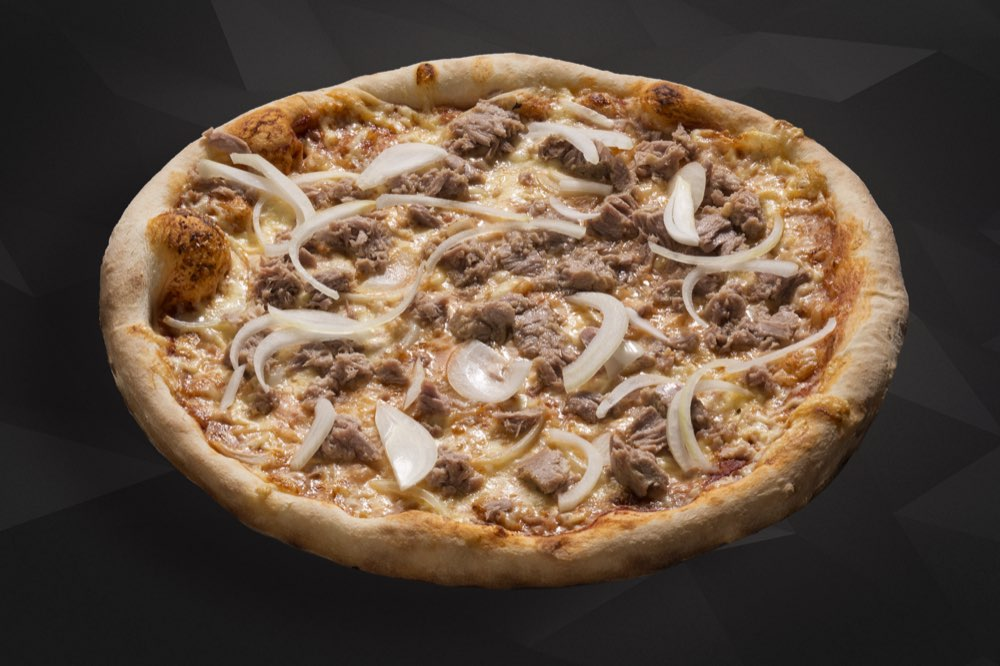
ketchup, sir, crveni luk, tunjevina
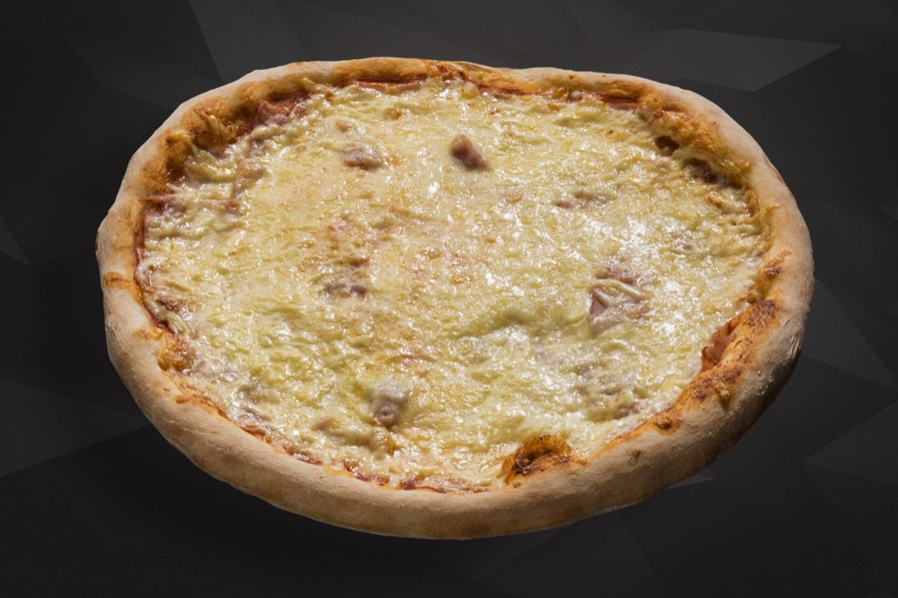
ketchup, šunka, sir
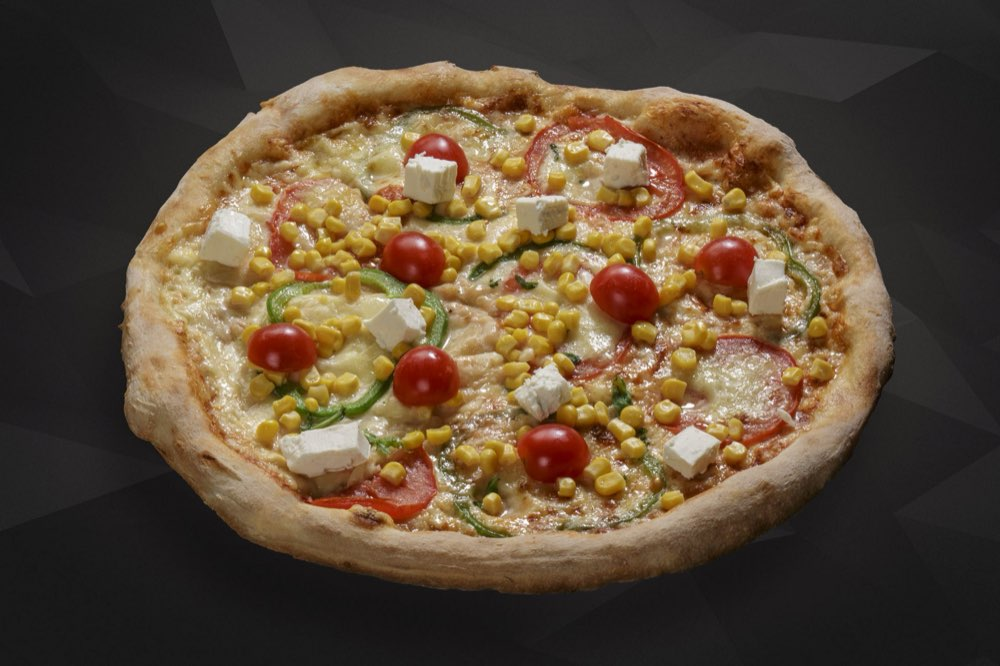
ketchup, sir, svježa paprika, svježa rajčica, kukuruz, feta sir, chilli rajčica
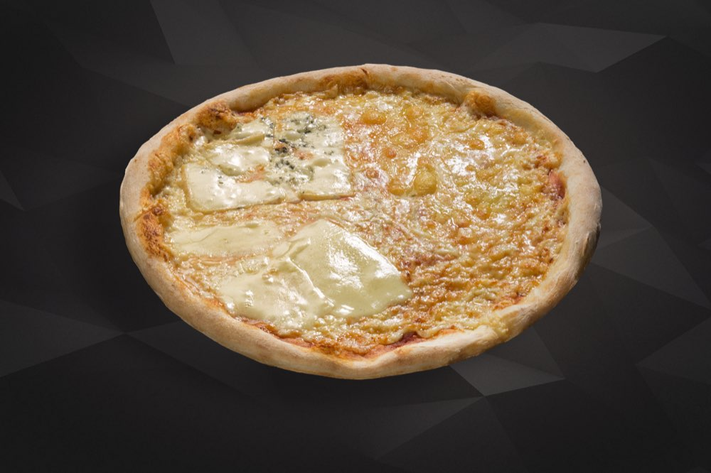
ketchup, gouda, edamer, gorgonzola, mozzarella
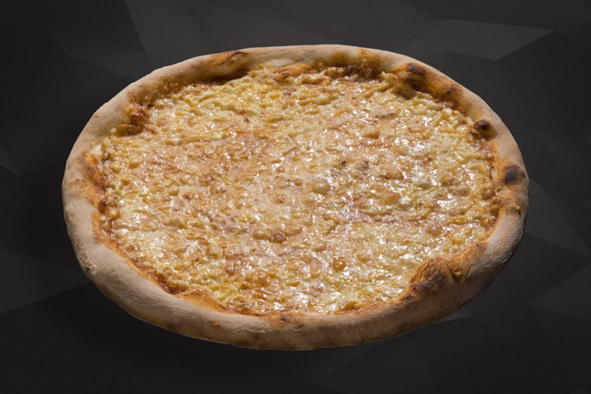
ketchup, sir
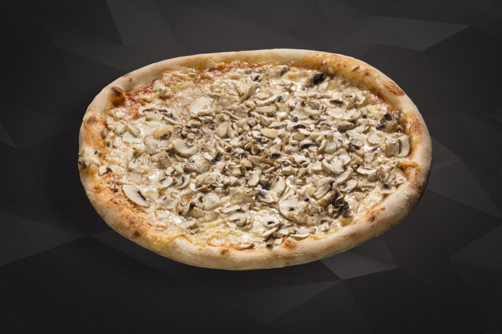
ketchup, sir, gljive
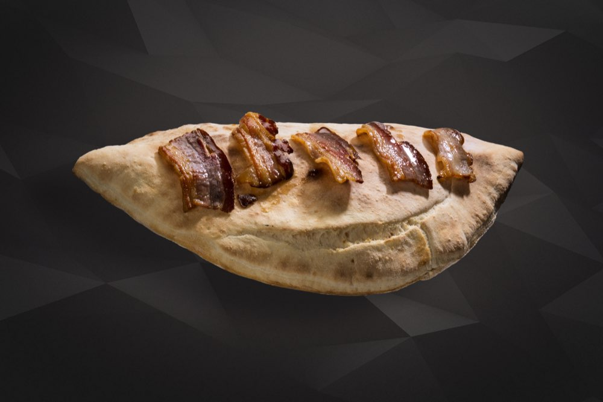
Preporuka kuće. Za sastav i veličine pitajte pri narudžbi.
Nema pizze s tim sastojkom u ovom izboru. Nazovite nas na 031 570 904, složit ćemo je po vašoj želji.
Cijene i dnevna ponuda: aktualne cijene za sve četiri veličine i lasagne doznajte telefonom ili na Glovu. Dostavljamo po Osijeku te u Tenju, Višnjevac i Bilje.
031 570 904